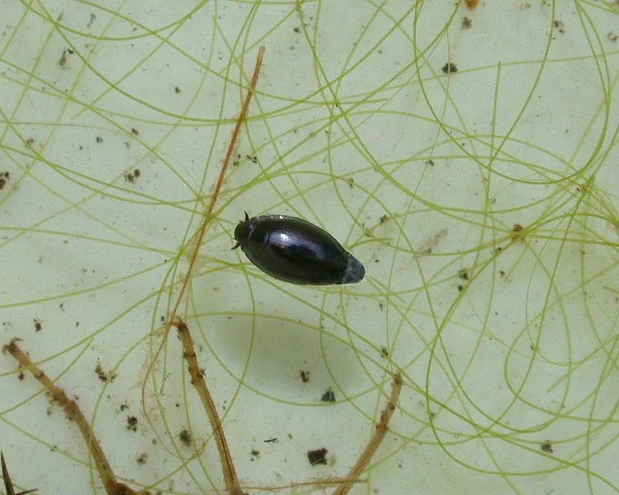

昆虫 · 动物界
鼓甲 Gyrinus japonicus

在水面快速旋转游动的小型甲虫，复眼分为上下两部分，能同时观察水面之上和水下的世界，是池塘和溪流的常客。
- 分类
- 门节肢动物门纲昆虫纲目鞘翅目科鼓甲科属鼓甲属
- 栖息环境
- 池塘、溪流和缓流河道的水面，常成群活动
- 地理分布
- 东亚地区，包括中国、日本和朝鲜半岛
- 保护级别
- 暂无评估
物种志
鼓甲成虫体长 5–8 mm，体呈椭圆形，背腹扁平，体色黑色而有光泽；足短而扁平、呈桨状，适合在水面划水。它最特别的结构是复眼：每只复眼分为上下两部分，上半部观察空中的动静，下半部观察水下的情况。
鼓甲分布于东亚的池塘、溪流和缓流河道。它常成群在水面打转游动，动作轻快，受惊时迅速潜入水底；肉食性，捕食落水的昆虫和其他小动物。鼓甲受惊时会分泌有异味的防御物质，用来吓退鱼类和鸟类等捕食者。它还是水质相对清洁的溪流和池塘中的常见昆虫，是观察水生昆虫行为的好对象。目前它没有IUCN 的正式评估，中国未将其列入国家重点保护野生动物名录。
形态与习性
- 食性肉食性，捕食落水的昆虫和其他小动物
- 体长5–8 mm
- 复眼每只复眼分为上下两部分，分别观察空中和水下
- 运动方式在水面快速打转游动，受惊时潜入水底
- 栖息地池塘、溪流和缓流河道
- 防御受惊时分泌有异味的防御物质
趣味知识
- 鼓甲的复眼分为上下两部分，可以同时看清水面上和水面下的情况。
- 它常在水面成群快速打转，因此也被称为“旋水虫”。
- 受惊时鼓甲会分泌有异味的液体，吓退捕食者。